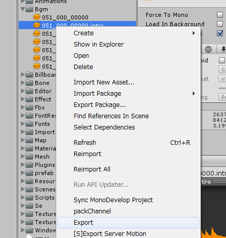

SoundEffect,BGM¶
Sound control managers are following .
These manager control the management of asset bundles,SE grouping,priority and simultaneous sound limit. When playing the BGM,It is used in order to play the intro part + loop part .
Note
The SE grouping,priority, and simultaneous sound limit are supported by 3D sound only. The manager controls 2D SEs so as not to play the same sound at the same time.
How to create a Sound Effect asset bundle¶
To place an audio file to use for sound effects along to the next step.
Create a “Se” folder at the “Assets/KsSoft/” folder.
Under the “Se” folder you created,You create more folders in a MulID .
You place the audio files under the folder that you created in MulID name.
If necessary , also to create a file called @se.def.
Highlight a folder, please select the [Right-Click] → [Export] (multiple can be selected).
The folder name with the same name as the asset bundle is created.This file name is “assetbundles/XXXX/XXX_XXX_XXXXX.unity3d”.

@se.def syntax¶
When creating an asset bundle,you can embed various information to the SE.The following is this example. The file format is UTF-8(without BOM).
// click sound effect
SE(052_000_00020) {
VOLUME = 1;
PRIORITY = 1;
GROUP = 200;
POLYPHONY = 1;
};
// decide sound effect
SE(052_000_00030) {
VOLUME = 50%;
PRIORITY = 1;
GROUP = 200;
POLYPHONY = 1;
};
It is possible to provide an alias to the same audio and assign the different parameters.
SE(se file name) {
Property 0;
Property 1;
:
Property n;
};
SE(Alias name,SE file name) {
Property 0;
Property 1;
:
Property n;
};
ID |
File name |
|---|---|
000_000_00010 |
000_000_00010.wav etc. |
“click” |
click.wav etc. |
Note
When you use the FiveCC , please do not forget to enclose with the “…”
The @se.def that includ a “se.h” automaticaly.¶
When you compile a “@se.def” file,”tr.h” is automatically included in your script. Common settings and constants are set to this file.
Assets/KsSoft/Se/include/se.h
@se.def property¶
VOLUME = Number¶
Set the volume.
You can specified by a float of 0-1 , or you can use the 0-100% of the percentage.
VOLUME = 1;
GROUP = Group number¶
It is effective only when a sound is a 3D.
Group number is specified by an integer of 0-255. It affects the simultaneous sound limit and priority.
PRIORITY = Priority number¶
It is effective only when a sound is a 3D.
The priority in the group set an integer of 0-255.
POLYPHONY = the simultaneous sound limit¶
It is effective only when a sound is a 3D.
Set between 1-255. It limits the number of simultaneous sound limit of the same group.If you exceed the number of simultaneous sound , this manager compare the sound priorities.If the priority which you want to play the sound is higher,it stop the sound that have lowest priority,and start to play new sound.
DISTANCE = minimum distance,maximum distance¶
It is effective only when a sound is a 3D.
When it plays at place nearer than the minimum distance , it plays at maximum volume.
In contrast , you can’t hear the sound that the distance is more than the maximum.
Preprocessor¶
You can use the same as C language preprocessor.
Preprocessor |
Description |
|---|---|
// Comment |
Line comment |
/* Comment */ |
Block comment |
#include “file name” |
Include the file |
#define constant |
Definition of a symbolic constant |
#define Function macro |
Function macro |
#if defined(symbol definition) … #endif |
Conditional compilation |
#ifdef … #endif |
Conditional compilation |
#ifndef … #endif |
Conditional compilation |
#pragma once |
Multiple include prevention |
BuildTarget is defined as a macro.
#if defined(StandaloneWindows)
MS-Windows
#else
Other
#endif
How to create an BGM’s asset bundle¶
If necessary,BGM divide to the intro part and the loop part.You can create an asset bundle that were included them.The manager can be played automatically in order to read it.
It converted to asset bundle in the next procedure.
Create a “BGM” folder at the “Assets/KsSoft/” folder.
The loop part must be named “MulID.mp3”.
The intro part must be named “MulID.intro.mp3”.
Highlight the loop file or intro file that you want to convert into asset bundle.
[Right-click]→[Export]
The asset bundle named “MulID.unity3d” is generated.